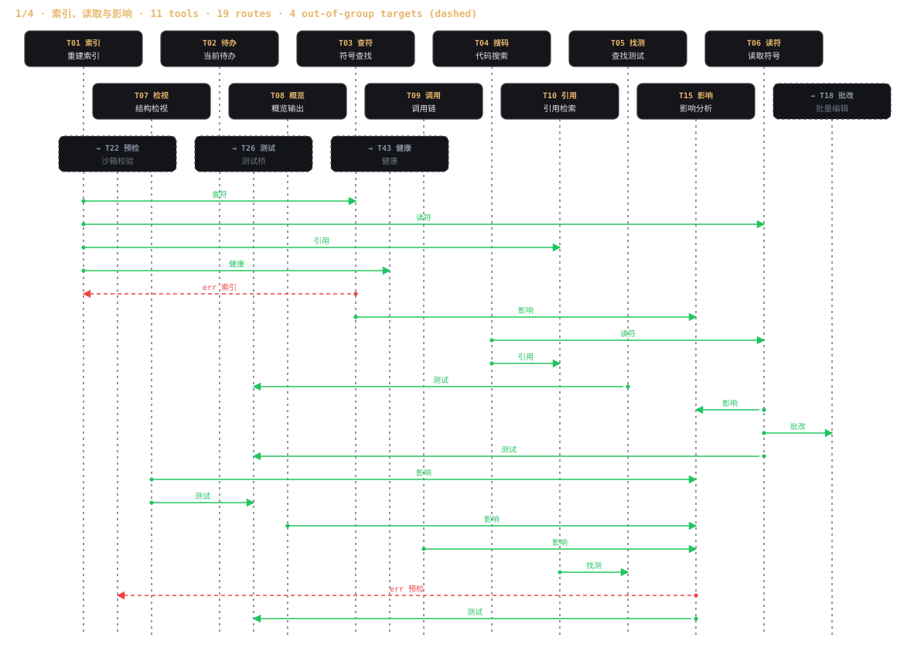
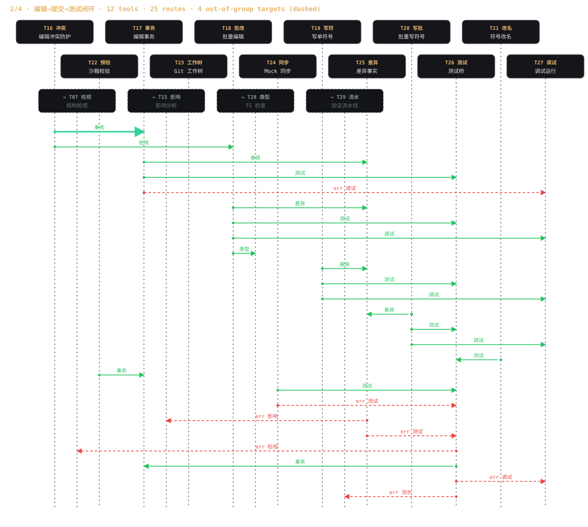
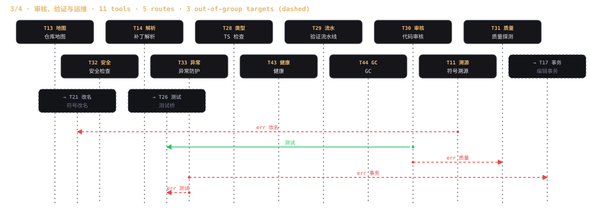
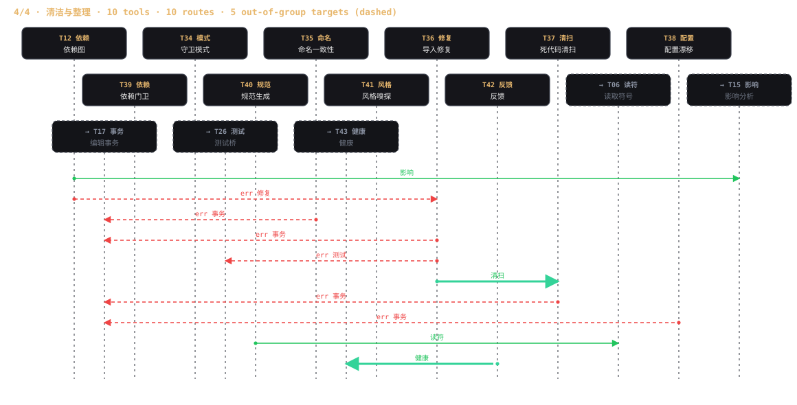

文档
安装
两条路径功能完全一致，仅索引后端实现不同。要求 Node >= 20。
tar 包启动时会打印 SQLITE BACKEND 升级提示；有网环境 cd malong && npm ci 即可升级为完整版。
两种安装方式都内置 Rust 解析二进制，MCP 服务器启动时自动拉起，无需手动启动。
Linux / macOS 通过 Unix socket（默认 /tmp/malong-parse-$(id -u).sock）通信；Windows 走 TCP 127.0.0.1:31001，服务器会自动拉起 malong-parse.exe。
路径与二进制可用 MALONG_SOCKET / MALONG_PORT / MALONG_PARSE_BIN 覆盖（见环境变量）。
快速开始
建索引 → 定位目标符号 → 评估爆炸半径 → 事务化修改（可回滚）→ 跑测试 → lint/typecheck 收尾。
客户端接入
MCP 层是标准 JSON-RPC over stdio，任何 MCP 客户端均可接入。以下均为已实测配置。
{ "$schema": "https://opencode.ai/config.json",
"mcp": {
"malong": {
"type": "local",
"command": ["node", "--max-old-space-size=512", "malong/mcp-server.js", "--workspace", "."],
"enabled": true
}
}
}
{ "mcpServers": {
"malong": { "command": "node", "args": ["/path/to/malong/mcp-server.js"] }
}
}
claude mcp add liuhe -- node /path/to/malong/mcp-server.js --workspace /path/to/project claude mcp list # → "liuhe … ✔ Connected" # 无头调用示例 claude -p "index the workspace with reindex, then find createDb with symbol_search" \ --allowedTools "mcp__liuhe__reindex" "mcp__liuhe__symbol_search"
model = "deepseek-v4-flash" model_provider = "opencode-zen" [model_providers.opencode-zen] name = "OpenCode Zen" base_url = "https://opencode.ai/zen/go/v1" # 任意 OpenAI 兼容端点 wire_api = "chat" env_key = "OPENCODE_ZEN_API_KEY" # codex 从该环境变量读密钥 [mcp_servers.liuhe] command = "node" args = ["/path/to/malong/mcp-server.js", "--workspace", "/path/to/project"]
版本注意：新版 codex 强制 OpenAI Responses API，需使用仍支持 wire_api = "chat" 的版本（已实测 0.50.0）。
bash malong/dsh/install-dsh.sh # 幂等；编辑 ~/.dsh/profiles/web/cordis.patch.yml 并自动备份 pkill -f "dsh web"; dsh web --port 3456 --host 0.0.0.0 --trusted-host <LAN IP>
桥接插件把全部 38 个工具注册为 malong__<tool>，并自动从当前会话工作区填充 workspace_dir（显式路径仍然优先）。完整指南（含索引规则）：malong/dsh/DSH-INTEGRATION.md
命令行参数
| 参数 | 说明 |
|---|---|
| --workspace <dir> | 索引与操作的工作区根目录 |
| --concurrency <n> | 并行任务数 |
| --max-old-space-size=<MB> | V8 堆上限，建议 512；未设置且堆无上限时启动会打印警告 |
| --expose-gc | 启用周期 GC + 内存监控（配合 health / gc 工具） |
环境变量
全部可选，未设置时使用默认值。
| 变量 | 默认 | 说明 |
|---|---|---|
| MALONG_STATE_DIR | ~/.config/malong | 使用/反馈/编辑统计写入目录；测试与沙箱环境可重定向 |
| MALONG_SOCKET | /tmp/malong-parse-$(id -u).sock | 解析守护进程 Unix socket 路径（Linux / macOS） |
| MALONG_PORT | 31001 | 解析守护进程 TCP 端口（Windows） |
| MALONG_PARSE_BIN | 内置 / PATH | 自动拉起守护进程时使用的二进制 |
| MALONG_PARSE_MODE | rust-service | 解析传输方式，当前版本仅支持 rust-service |
| MALONG_WS_GC_DAYS | 14 | health cleanup 修剪闲置工作区缓存的天数阈值；0 禁用 |
44 个 MCP 工具
全部工具纯正则 / AST 实现，零 LLM 调用，可复现、可审计、可 CI。点击分组展开工具说明。
I/O 原语 3 ▸
索引与搜索 5 ▸
分析理解 8 ▸
编辑与重构 7 ▸
质量与安全 8 ▸
工程与验证 8 ▸
依赖与系统 5 ▸
工具路由地图
44 个工具拆成 4 份时序图——每一条 ok/err 去向都已画入（绿实线 = 成功，红虚线 = 出错）；虚线卡片 = 目标工具在另一份图里；粗绿线为主链。编辑→测试闭环（edit_transaction ↔ diff_facts ↔ test_bridge ↔ debug_runner）完整位于 2/4。




图例
节点编号对照（T01–T44） (44)
语言支持
符号级读写（read / write_symbol）支持 10 种语言族，写后自动语法自检（node --check / py_compile）。